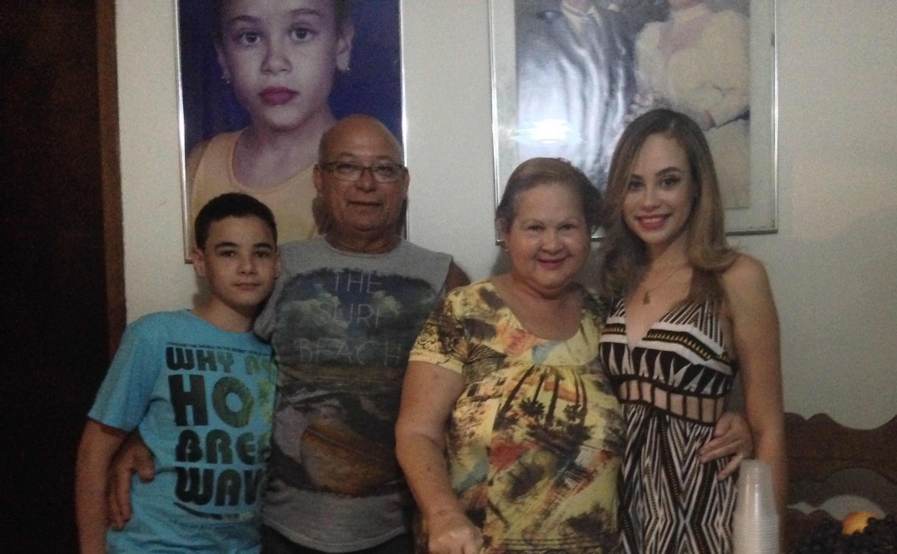

Nathália Raphaella de Sousa Lima, filha da professora Nilcinete (tia Neta) e do serralheiro e pedreiro Risonado (careca). Nascida no dia 11 de novembro de 1997, em Recife - Pernambuco, mas sua família mora em Ribeirão, há 97 km de Recife...
Aos 6 anos, neste mesmo ano (mais precisamente dia 11 de setembro de 2003), Nathália vira a irmã mais velha e ganha seu irmãozinho, José Francisco de Sousa Neto (Netinho), agora, o caçula da família.
Suas avós, Maria Eleuzine (vovó Lió) por parte de mãe e Maria (vovó Maria) por parte de pai, hoje em dia fazem morada no céu, assim como sua mãe. 